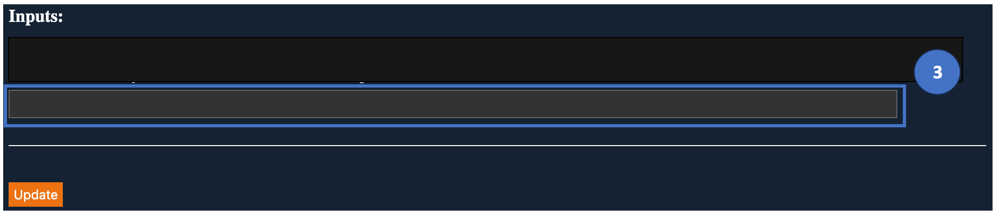
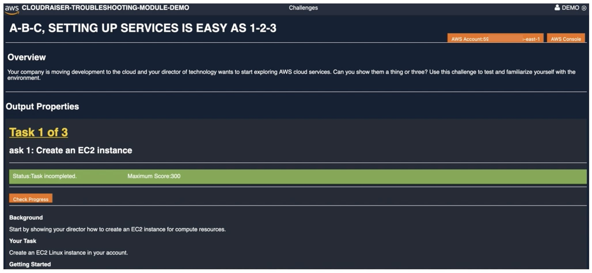
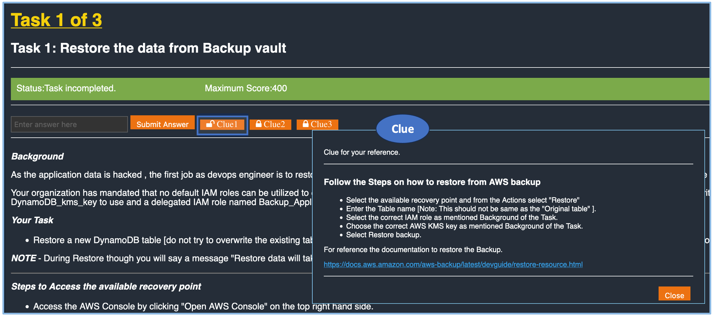

개요
- Independent Test Project Designers: Shawn Xu, Xiaowei Wang, Qiang Wang, Xu Chen
- Independent Test Project Validator: Chit Boon Lee, SCM
Contents
This Test Project consists of the following documentation/files:
- WSC2024_TP53_main_document_actual_en
- WSC2024_TP53_day1_actual_en
- WSC2024_TP53_day2_actual_en
- WSC2024_TP53_day3_actual_en
Introduction
Cloud adoption is now critical for businesses of all sizes. To stay ahead, companies leverage the cloud's agility to build solutions that scale seamlessly, ensuring a positive customer experience even under peak loads or outages. These Test Projects evaluate your ability to design, deploy, manage, and secure cloud-native applications effectively, along with your troubleshooting skills and composure under pressure.
사용 기술
| 분류 | 항목 |
|---|---|
| AWS | AWS Console, IAM (HengHaTeamRole), us-east-1 region |
| 플랫폼 | Cloud Raiser (event dashboard, Score Events, Scoreboard, Inputs, Clues) |
C1 and C2 – Well-architecting
참고원문은 C1·C2·C3가 무엇을 가리키는지 명시하지 않음. 채점표의 Day of Marking과 G1~G4 항목(Well Architecting 1 = Day 1, Well Architecting 2 = Day 2, Troubleshooting·Cloud Questing = Day 3)과 day1~day3 문서 내용으로 보면 C1 = Day 1, C2 = Day 2, C3 = Day 3 이다. 아래 "Each day"는 C1·C2(Day 1·Day 2)를 뜻한다.
Each day begins with developing solutions that meet the specified requirements. For information about your account permissions, please refer to the HengHaTeamRole in your IAM console.
Infrastructure Cost
To optimize resource usage, deploy only the resources required to handle the current load. Deploying excess instances will result in penalties.
Personal Event Dashboard
Log in to the Cloud Raiser Platform using the provided credentials to access your personal event dashboard. Your event dashboard provides real-time insights into your solution's performance against evaluation criteria such as scalability, performance, resource optimization, etc. Marks awarded for each criterion contribute to your overall score.
참고Please note: The personal dashboard is not intended for competitor comparisons based on overall scores. It focuses on individual performance against the defined evaluation criteria.
참고오해 소지: 위 문장은 개인 대시보드의 용도를 말할 뿐이다. 채점표 Criterion G(G1~G4, 각 2점)는 "system score board"상의 선수 순위로 채점한다(1~3위 2점, 4~6위 1점, 7~10위 0.5점, 11위 이하 0점).


The competition dashboard provides a central hub for managing your participation. Here's a breakdown of the key components:
- Score Events and Scoreboard: This section provides access to individual activities that contribute to your overall score. Think of these events as milestones you need to achieve for a functioning application.
- AWS Console: Click this button to access a temporary AWS account provided specifically for this competition. This account will be closed and inaccessible after each day.
- Inputs: This section allows you to submit your answers according to the event requirements. These answers might include public IP addresses, ALB DNS names, S3 URLs, API endpoints, or other relevant details.
Score Events and Scoreboard
For a deeper dive into your performance, click the "Score Events" button on the player dashboard. This will show you a point-by-point breakdown of your score.

This page provides a detailed breakdown of your score, divided into two sections:
- Event List: Each row represents a score event, including its source (where the points came from), the points awarded/deducted, and the reason.
- Reason for Point Changes: Pay close attention to the reason column, especially for point deductions. This will help you identify and fix any issues impacting your score.
AWS Services
Even though you have access to most services and your IAM role grants permissions for this competition, encountering "Permission Denied" errors is still a possibility. Remember, permissions can vary across regions, so double-check you're working in the designated us-east-1 region for the competition. Additionally, exceeding resource limits associated with your permissions can also trigger errors.
C3 – troubleshooting and QUEST
The competition goes beyond testing your architectural prowess. We'll also assess your proficiency in crucial cloud computing skills through targeted challenges within Cloud Raiser during C3. Get ready to showcase your technical depth alongside your creative problem-solving abilities!
Login to Cloud Raiser
We will provide you with login credentials.

TROUBLESHOOTING MODULE
Once logged in, you'll have the flexibility to tackle the challenges in any order that suits your approach!

Once you choose a challenge, a dedicated screen will appear. Here, you'll find detailed task instructions alongside a convenient button to access your AWS account through the AWS Console.

Clues
Each challenge provides detailed instructions to equip you for success. Remember, while helpful clues are available, using them will deduct points. Craft your approach strategically! Consider if the potential point reduction outweighs the time saved by using a clue. This competition rewards both problem-solving skills and strategic decision-making.
참고원문은 감점 폭을 밝히지 않음. 채점표(B3·C3·D3·E3, Calculations 3 "Clues Used")는 Day 3 트러블슈팅 챌린지(Challenge1~12)를 각 2점으로 두고 단서 1개당 0.5점을 감점하며, 단서 4개 이상 사용 또는 미시도 시 0점이다.

Once you finish a prerequisite task, the next steps will unlock, guiding you towards completion. Remember, you'll need to complete all tasks to mark the challenge as finished.

QUEST MODULE
This challenge combines Well-Architecting and Troubleshooting. You'll see all tasks at once, and you are free to complete them in any sequence. Analyze your performance with ScoreEvents. QUEST tests your ability to strategize using both architectural knowledge and troubleshooting skills.

Good luck!
원문 대비 수정 내역
원문 대비 수정 내역 (6건) — 원본 시험지와 달라진 부분과 근거
| 위치 | 원문 | 수정 | 사유 |
|---|---|---|---|
| C3 – troubleshooting and QUEST 제목 | TOUBLESHOOTING MODULE |
TROUBLESHOOTING MODULE |
오타 |
| C3 – troubleshooting and QUEST 제목 | clues |
Clues |
다른 소제목과 대소문자 통일 |
| Personal Event Dashboard 본문 | resource optimization and etc. Marks awarded for each criteria |
resource optimization, etc. Marks awarded for each criterion |
문법 오류(and etc., criteria 단수형) |
| C1 and C2 – Well-architecting | (C1·C2·C3 정의 없음) | NOTE 추가 | C1/C2/C3 = Day 1/2/3 대응을 채점표 Day of Marking·G1~G4로 명시 |
| Personal Event Dashboard | "not intended for competitor comparisons" | NOTE 추가 | 채점표 Criterion G는 score board 순위로 채점하므로 순위가 무관하다는 오해 방지 |
| Clues | "using them will deduct points" (감점 폭 없음) | NOTE 추가 | 채점표 Calculations 3 "Clues Used": 단서 1개당 0.5점, 챌린지당 최대 2점 |